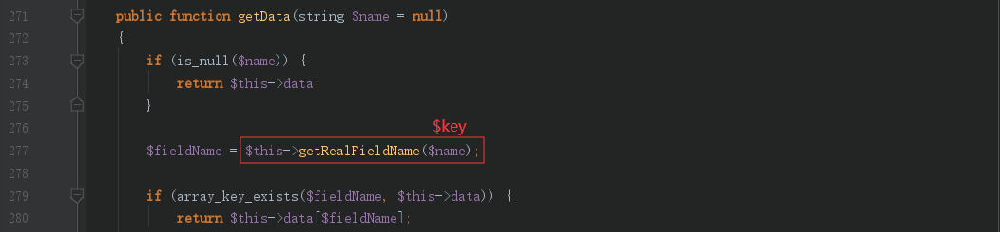

上周安洵杯考到了一题tp6反序列化，虽然借着学长的POC一把梭getflag，但是没有弄懂这条POP链的原理，是无法体会POP链的魅力所在的，遂来自己跟一下这条链，也算填个坑
环境搭建
1 | # 安装 |
修改入口Index：/app/controller/index.php
1 |
|
利用条件
- 存在直接反序列化点，参数可控：
unserialize($_GET['input']) - 存在文件上传，文件名可控，路径已知，存在触发phar反序列化的函数。例如：
is_file("phar://phar.jpg")
POP链分析
总的目标寻找类似tp5反序列化中可以触发__toString()魔术方法的点
全局搜索__destruct()，寻找触发点
一般寻找POP链，起点都是从__destruct()开始
这里漏洞的触发点是Model类的__destruct()，对应文件：vendor/topthink/think-orm/src/Model.php
当$this->lazySave == true时，会触发$this->save()方法
跟进save方法
save方法中可以看到对$this->exists参数进行判断，true调用updateData()方法，false则调用insertData()方法
分别跟进这两个方法，发现updateData方法可以继续利用，updateData方法触发条件：
$this->isEmpty()方法返回false

即满足$this->data != null
$this->trigger('BeforeWrite')方法返回true
即满足$this->withEvent === false
跟进updateData方法
发现调用了checkAllowFields()方法，checkAllowFields触发条件：
$this->trigger('BeforeWrite')方法返回true，在前面的save方法中即可满足$data == 1
跟进getChangedData方法
如图中标注，该方法默认返回$data = 1。确保checkAllowFields()触发后，我们继续跟进之。
跟进checkAllowFields方法
这里发现了字符串拼接$this->table . $this->suffix
触发条件为：
$this->field == null$this->schema == null
这两个条件默认都满足，那么继续看$this->db()这个方法
跟进db方法
发现db方法存在$this->table . $this->suffix参数的拼接，可以触发__toString
后面就是延续tp5反序列化的触发toString魔术方法了
那么先整理一下目前的流程图
寻找__toString触发点
vendor/topthink/think-orm/src/model/concern/Conversion.php
跟进$this->toJson()方法
跟进toArray方法
我们要触发的是getAttr方法
来看看触发条件：
$this->visible[$key]存在，即$this->visible存在键名为$key的键，而$key则来源于$data的键名，$data则来源于$this->data，也就是说$this->data和$this->visible要有相同的键名$key
然后把$key做为参数传入getAttr方法
跟进getAttr方法
首先将$key传入getData方法，继续跟进getData方法

继续跟进getRealFieldName方法

当$this->strict为true时直接返回$name，即$key
回到getData方法，此时$fieldName = $key，进入判断语句：
1 | if (array_key_exists($fieldName, $this->data)) { |
返回$this->data[$key]，记为$value，再回到getAttr
最后执行：$this->getValue($name, $value, $relation);
即：$this->getValue($key, $value, null);
跟进getValue方法
最终会把$this->withAttr[$key]作为函数名动态执行函数，而$value作为参数
到这里构成一条完整的POP链
后半部分流程图
所以后半部分参数赋值如下：
1 | $this->data = ["key"=>$command]; |
寻找继承类
因为这里的Model类为抽象abstract类，所以我们需要找一个继承于Model的类，比如Pivot类
POC编写
1 |
|
参考
https://zhzhdoai.github.io/2019/10/02/ThinkPHP-6-0-x%E5%8F%8D%E5%BA%8F%E5%88%97%E5%8C%96/